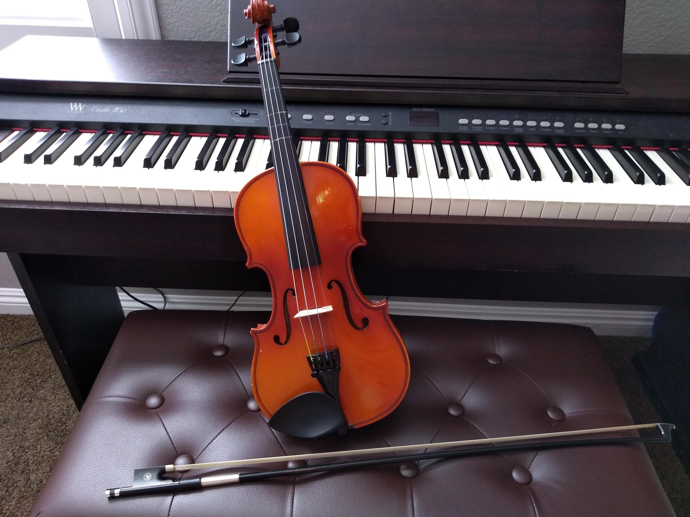

An Amazing Home for Music
We Five is a music institution which specializes on classical music(orchestra) led by Principal Conductor Samantha

We are based in Nigeria at 132 GRA,Enugu State, and usually performing across the world, we actively conduct our tutorial both physical and digital classes.
We Five creates thrilling performances for a global audience. Through its network of residencies, We Five has a national footprint, serving communities across Nigeria both in performance and through its extensive outreach and engagement programme.
At the heart of the Orchestra’s residencies is an outreach and engagement programme that empowers people in every community to engage with, and participate in, orchestral music.
The We Five’s flagship Orchestra Unwrapped project for schools encompasses concerts, in-school workshops and teacher training, delivered in partnership with Music Hubs; intergenerational creative music-making community project Hear and Now brings together people living with dementia and their carers with young musicians; and urban-classical project Symphonize engages vulnerable teenagers.
Great Famous Quotes in Music
Music gives a soul to the universe, wings to the mind, flight to the imagination and life to everything ― Plato  How is it that music can, without words, evoke our laughter, our fears, our highest aspirations?” ― Jane Swan
“If I were not a physicist, I would probably be a musician. I often think in music. I live my daydreams in music. I see my life in terms of music.” ― Albert Einstein
“Music is a language that doesn’t speak in particular words. It speaks in emotions, and if it’s in the bones, it’s in the bones.” ― Keith Richards
“I think music in itself is healing. It’s an explosive expression of humanity. It’s something we are all touched by. No matter what culture we’re from, everyone loves music.” ― Billy Joel
“One good thing about music, when it hits you, you feel no pain.” ― Bob Marley
“The only truth is music.” ― Jack Kerouac
“There are two means of refuge from the miseries of life: music and cats.” ― Albert Schweitzer “Music is the shorthand of emotion.” ― Leo Tolstoy
“Without music, life would be a blank to me.”― Jane Austen